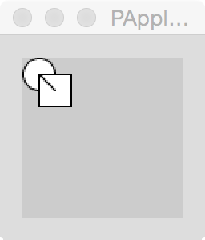

CSCI 150 - Lab 12
Graphics and Animation
Materials
Overview
We have created graphics and patterns using the
turtle module in Python. This lab explores a complete graphical
animation framework called Processing, using the Python module.
For today's lab, download
the latest version of Processing (3.0.1) for your operating
system. Once downloaded and opened, you will find in the upper-left or
upper-right corner of the screen a box that says "Java". Select this
box, and choose "Add Mode". Select "Python Mode for Processing 3" and
then click "Install" in the lower-right portion of the Mode
window. After it finishes installing, click on the "Java" box again
and select "Python". You are now ready to work through the lab.
Step 1 - Faces
When we draw on the screen, we first need to
be familiar with the coordinate system. We denote the width as x and
the height as y. Most computer graphics modules, Processing included,
specify that the x, y origin (0,0) is located in the upper-left corner
of the screen.
There are three common things to draw in Processing, an ellipse, a rectangle, and a line.
Write the following lines of code in Processing and press the Play button.
ellipse(10, 10, 20, 20)
rect(10, 10, 20, 20)
line(10, 10, 20, 20)
You should see an image like this:

An ellipse takes four arguments, the first two being the x, y center of the ellipse,
followed by the width, then the height. A rect also takes four arguments, the
first two being the upper-left coordinate of the rectangle, again followed
by width and height. A line takes four arguments, the first two being
the starting x, y coordinate, and the last two being the ending x, y coordinate.
Also, notice that the first thing to be drawn is covered by the images
that follow. This indicates that the way that images are drawn,
their Z-order, is based on time.
Task
Use ellipse, rect, and line to draw a face on the screen. At a minimum, the face should
have eyes, ears, a mouth and a nose. You can find more shapes on the
Python Reference for Processing page.
Step 2 - Colors
Three different portions of our drawing can be altered to include colors. Recall
the hexadecimal representation of colors discussed earlier in class, where the
computer understands a color to be composed of three components, Red, Green, and Blue.
Each of the three functions below take a hex string as an argument denoting the color.
The background function will paint the whole screen the given color. The fill
function changes the color to be painted within an ellipse or rect. The
stroke function changes the color to use for making
a line or for making the border of an ellipse or rect.
background("#FFFFFF")
fill("#00FFFF")
stroke("#FF0000")
There is only one pen being used for Processing, so if we want to change colors
of the things we draw, we need to call fill or stroke
in between each of our drawing calls.
It will be convenient to have some of our basic colors defined in a dictionary.
COLORS = {"black":"#000000", "white":"#FFFFFF",
"red":"#FF0000", "green":"#00FF00",
"blue":"#0000FF", "yellow":"#FFFF00",
"orange":"#FFA500", "hendrixorange":"#F58025",
"purple":"#9B30FF"}
Task
Use the above shapes and color functions, along with any others you might
find useful on the
Python Processing Reference
page, to enhance your earlier image of a face.
Step 3 - Functions
As our program is about to get more complicated, it is a good idea to start using
functions. There are two important functions that are treated
specially by Processing.
Setup
If you define a setup function, Processing will call it first
when running your sketch. In this function, you should first set up
the screen size.
The default screen size is 100 x 100. This can be changed by adding the following
function call at the beginning of your code, for example, to make a screen
with a width of 640 pixels and height of 480 pixels:
def setup():
size(640, 480)
Draw
The draw function is called by Processing for every frame of the animation.
Put your earlier face code in this draw function, and press play. For example:
def draw():
background(COLORS["black"])
fill(COLORS["red"])
stroke(COLORS["green"])
ellipse(50, 50, 100, 100)
fill(COLORS["yellow"])
ellipse(25, 25, 35, 35)
ellipse(75, 25, 35, 35)
stroke(COLORS["orange"])
line(30, 80, 70, 80)
(You should use your own face code; the above is just an example.)
It should look exactly the same as it did above, but now we will have
the ability to change the face for each frame.
Step 4 - Faces in Space
All of our images so far have been static. To add animations, we need to start
remembering the state of our images and creating methods for how it will change.
The natural way to do this is to create new object, and in particular, we will
be representing Faces floating in space.
We will represent a Face with a class in Python. The face will need to remember
the x,y coordinates for the center of the face. We will also remember the base color
used for the face. In the example above, this was red. Notice how the draw function
abstracts away the initial face to be centered around any x,y coordinates. This will
let us move the face around the screen. Of course, you should use
your own face-drawing code in place of the example code shown below.
class Face:
def __init__(self, x, y, color):
self.x = x
self.y = y
self.color = color
def draw(self):
fill(self.color)
stroke(COLORS["green"])
ellipse(self.x, self.y, 100, 100)
fill(COLORS["yellow"])
ellipse(self.x - 25, self.y - 25, 35, 35)
ellipse(self.x + 25, self.y - 25, 35, 35)
stroke(COLORS["orange"])
line(self.x - 20, self.y + 30, self.x + 20, self.y + 30)
We will collect our Face instances in a list called faces, declared outside of any
of the above functions.
faces = []
We will also change our setup and draw functions to
add a single face to the list and draw it, respectively.
def setup():
size(640, 480)
faces.append(Face(50, 50, COLORS["red"]))
def draw():
background(COLORS["black"])
for f in faces:
f.draw()
Try moving your face around the screen, and changing its color, by
altering the arguments you use to create the Face in the
setup function.
Task 4.1: Multiple faces
Change the setup function to add multiple faces at random locations and
with random colors around the screen. Make sure your locations are chosen so that
the face is always completely visible on the screen.
Task 4.2: Face sizes
Add a size component to
your Face, so the setup method can also initialize
the size. Change your draw method of Face to account
for this new size component, and test it out by drawing smaller and
larger faces. Make sure your locations are still chosen so that the
face is always completely visible on the screen!
Step 5 - Movement
With the faces being drawn by an object, we
can now make these objects move. Add new components to
your Face, called velx and vely, to capture
the velocity of the Face. For now, initialize them to 1, so they will
be moving at a speed of 1 pixel per update, as shown here:
self.velx = 1.0
self.vely = 1.0
Next, add a new method to your Face
called update. When called, this function will change the
values of self.x and self.y by the velocity, and
thus simulate movement.
def update(self):
self.x += self.velx
self.y += self.vely
Finally, inside the main draw function, add a call to
the update method of each face before the
individual draw method. Your draw function should
now look like this:
def draw():
background(COLORS["black"])
for f in faces:
f.update()
f.draw()
Woah, it is moving! This illusion happens because for each frame, the
window is completely wiped out through the call to
the background function, and then the faces are drawn at the
new locations. Verify this is happening by commenting out the call
to background. Now you will see the faces repeatedly drawn,
but shifted down and to the left by 1 pixel each iteration.
Task 5.1: Bouncing
Currently, the faces disappear after a
while, because they moves off the bottom of the screen. We would like
to keep them bouncing inside the window. Add in checks to
the update method to reverse the appropriate velocity
component when a face hits a wall, by multiplying the velocity in
that dimension by -1.
Task 5.2: Random speeds
Abstract the velocities so they are initialized by parameters in
the __init__ method, and augment your setup function to
choose random velocities between -1 and 1 for both the x and y
dimension for each Face created. You should now have faces
moving in all directions and bouncing off of all the walls of the
window.
Step 6 - Extensions
Research two of the following extensions on the
Python Processing Reference
page and augment your animation above.
Task 6.1: Mouse and keyboard input
Make your animations interactive by reacting to input from the
mouse and the keyboard. For example you could have new Faces appear
when and where the mouse is clicked. You could increase or
decrease the velocity of all the Faces when certain keys are pressed.
Task 6.2: Animated faces
Alter your update method of the Face to change the internal pieces of the face
in a cyclic pattern. For example, the face could smile for a few timesteps, then frown,
and then go back to smiling. Or the eyeballs could be moving up and down, left and right.
Task 6.3: Face collisions
Right now all the faces pass through each other when they move.
Add a collision detection method, that checks each pair of faces to see if they
are intersecting, and if so, makes the smaller one disappear.
Task 6.4: Images
Learn how to import images into your Processing sketch, and make them move around the
screen as we did with the Face above.
Task 6.5: Other transformations
Learn about rotations and translations, and apply these dynamically to your images,
making the Faces spin and shift.
Task 6.6: General Sprite class
The movement functionality of the Face above should really be abstracted, since
we can imagine many types of objects that could be moving around the screen.
Create a general Sprite class that only worries about the movement, and make
Face inherit from Sprite to add the draw method.
With this abstract, you can now easily create other moving objects by inheriting
from Sprite and avoid duplicating this update code in each object. Try making another
object that moves.
What to Hand In
Save your project in some known location. Note that Processing will
save your project not as a file, but as a folder containing
multiple files. You should make this folder into a zip archive (ask
for help if you do not know how to do this) and turn in the resulting
zip file via Moodle. M
ake sure you have followed
the Python Style Guide, and
have run your project through the Automated Style Checker.
Grading
- To earn a D on this lab, complete Step 1.
- To earn a C on this lab, do all the above and complete Steps 2 and 3.
- To earn a B on this lab, do all the above and complete Step 4.
- To earn an A on this lab, do all the above and complete Step 5.
- To earn a 100 on this lab, do all the above and complete two extensions from Step 6.
© Mark Goadrich and Brent Yorgey, Hendrix College